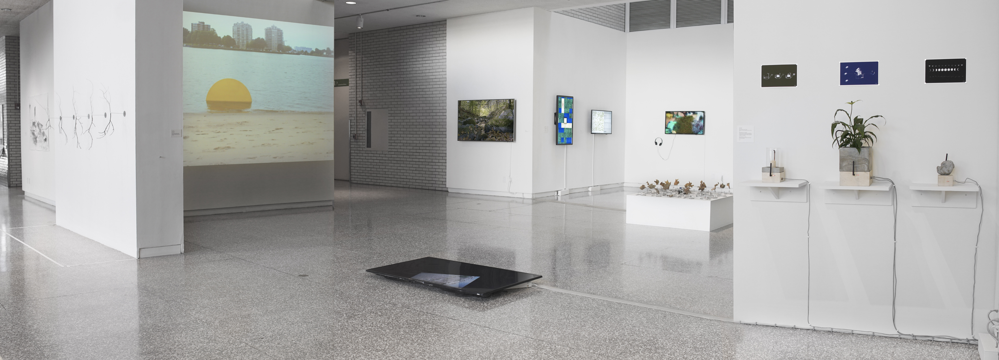

Through the use and lens of digital tools and technology, Stream Capture asks how we might engage with a reimagining of the natural environment if we cannot physically enter it. The work in the exhibition explores human perception, simulation, mapping, time and scale shifts, and historical study and preservation. The exhibition offers a sense of the future and the possibility of movement from place to place (here to there) and from time to time (present to future).
The artists featured in the exhibition work in a range of media, including prints, installation, projection, video, software, video games, sculpture, plants, and electronics.
Featured Artists:
Aram Bartholl
David Bowen
Tega Brain
Nicky Case
Gottfried Haider
Claudia Hart
Catarina Lee
Jan Robert Leegte
Sara Ludy
Martin O’Leary
Eva Papamargariti
Everest Pipkin
David Rueter
Helmut Smits
Clarissa Tossin
Mark Tribe
Stream Capture
January 16 – March 4, 2018
curated by Ben Moren
Minneapolis College of Art + Design, Main Gallery